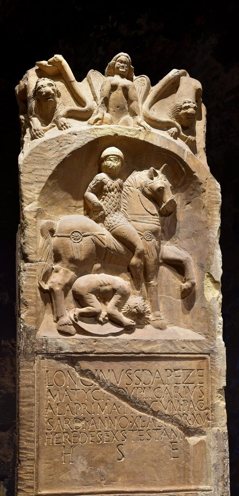
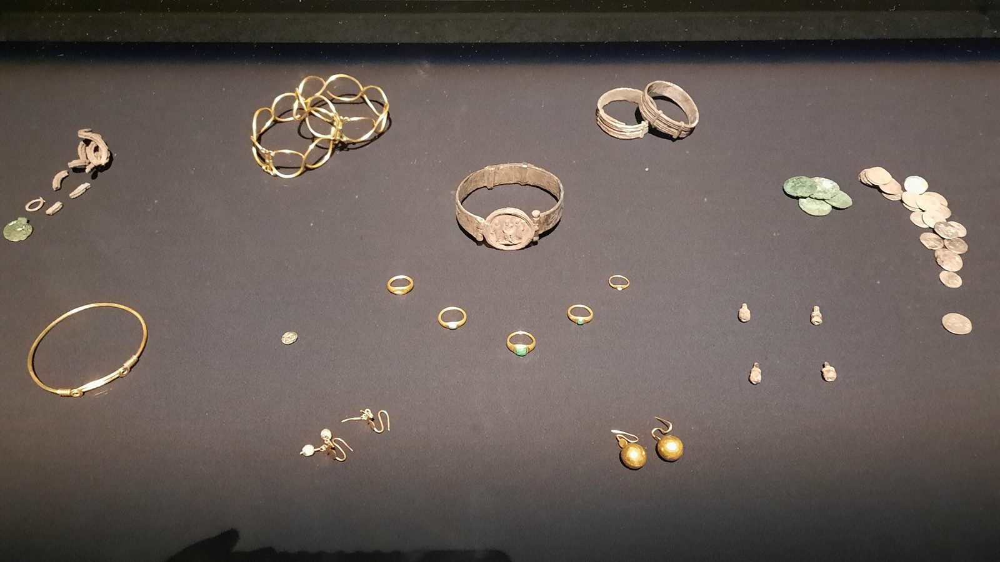
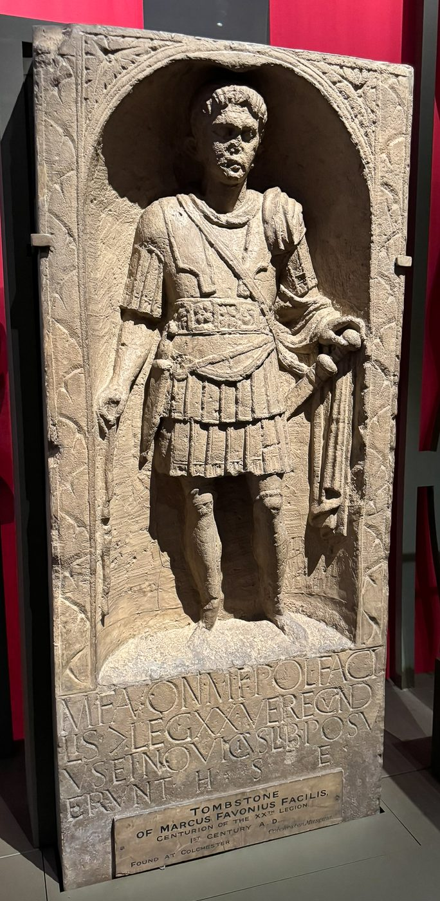

Unit 4 · Boudicca · Lesson 8
Reading the ruins: the archaeology of the destruction
Tacitus says three towns burned. What can the ground itself tell us, and where does it fall silent?
Year 11 Ancient History · Present with → or space · Read on a phone with R

Connect · 3 minutes · books closed · everyone writes · press K for the timer
Three towns: in what order, and why London?
Put Camulodunum, Londinium and Verulamium in Tacitus’s order and say why London fell.
Fix the tense:
“Tacitus reported that centurions plunder Prasutagus’s kingdom.”
Camulodunum (Colchester) → Londinium (London) → Verulamium (St Albans), Annals 14.32–33.
Suetonius reached it first, but with too few soldiers he “resolved to save the province at the cost of a single town” and left; those who stayed were killed (14.33).
Tacitus reports that centurions plundered Prasutagus’s kingdom. (Present for what a writer does; past for what happened.)
Today: does the ground agree with Tacitus?
Learning intentions and success criteria · 2 minutes
Today’s goals
- analyse archaeological evidence for the destruction of Camulodunum and Londinium
- evaluate how far archaeology supports Tacitus, with modality matched to the evidence
- explain what the destruction layers and the hoard reveal
- explain why the tombstone evidence is debated
- write an Evaluate paragraph whose modality matches the evidence
Syllabus outcomes: AH-11-05 analyses different types of sources for evidence to support a historical account or argument · AH-11-06 explains differing interpretations and representations of the past · AH-11-07 communicates historical understanding, applying historical knowledge, terms and concepts. Life Skills: AH-LS-08 uses sources to form conclusions about the past · AH-LS-11 communicates information about the past using historical terms and concepts.
Note-making · the routine for the whole course
How to structure your notes
questions and key terms, written after
short phrases, arrows (→ leads to), abbreviations (c. = about; CE = Common Era)
- 1A new pageA cue column about a quarter of the page wide; title and date at the top; room for a summary at the bottom.
- 2Listen and look, then writeDon’t copy while a slide is being explained. Phrases, not sentences; a source for every claim.
- 3Write your own notes at each ✎ checkpointThen compare with the model notes, one row at a time. Add what you missed in a second colour.
- 4Write the cue questions afterwardsUse exam verbs: explain, analyse, evaluate. To revise, cover your notes and answer the cues.
- 5Finish with a three-sentence summaryTwo checkpoints today: the destruction layers and the hoard · the tombstones.
Key vocabulary · add to the unit word wall
Words for reading the ruins
| Verb (NESA) | Meaning · what the answer does |
|---|---|
| Evaluate | ‘Make a judgement based on criteria. Determine the value of.’ — State the criteria and judge against them. |
| Writing term | Meaning |
| Modality | How certain a claim is: certainly, probably, may, cannot confirm. |
| Added today | Meaning |
| RIB | Roman Inscriptions of Britain: the numbered catalogue of Roman inscriptions found in Britain, with its editors’ notes. |
| Terminus post quem | From Unit 1: ‘The date after which’: a coin or object gives the earliest possible date for the layer it is found in. |
| Content terms | Meaning |
|---|---|
| Destruction layer | A layer of burnt or broken debris in the ground that marks a fire or attack. |
| Torc / hoard | A metal neck ring, often of gold and silver; who wore torcs is debated / valuables buried together, for safekeeping or as an offering. |
| Veteran / colonia | A retired soldier / a town of Roman citizens, often veterans; Camulodunum was the first in Britain. |
| Legion / auxiliaries | A unit of about 5,000 Roman citizen soldiers / soldiers recruited from non-citizens. |
1 · The burnt layers and the hoard · I do — think aloud · then cold call
Camulodunum (Colchester): the red and black layer
How is a burnt layer dated? If the layers are undisturbed, the latest coins and pottery in and under it give the earliest date the fire could have happened (Unit 1: terminus post quem).
The revolt left behind a remarkable red and black destruction layer which varies in depth from a few centimetres to up to half a metre in some parts of Colchester. This deposit consists of the stumps of burnt clay walls of buildings buried beneath a mass of broken and collapsed fragments of clay from the upper parts of the walls.
Colchester Heritage Explorer (Colchester City Council), ‘The Boudican revolt’, summarising excavations across the town since the 1920s
What does the layer show, and what can it not show?
| The layer shows | It cannot show |
|---|---|
| a great fire: VCH Essex finds “few places in the town where there is no evidence of the fire” | who lit it, or why |
| buildings burned where they stood, with food, a bed and a pottery shop’s stock inside | how many died: human remains are “very rarely found” |
| is consistent with a date of about 60 or 61 CE, from the coins and pottery in and under it | on its own, that this fire was the revolt: that link comes from Tacitus |
1 · The burnt layers and the hoard · I do — think aloud · then cold call
What people hid: the Fenwick hoard

- Found: 2014, by the Colchester Archaeological Trust, digging under the Williams & Griffin store on the High Street
- Where: in a small pit dug into the floor of a house, under the burnt debris of that house
- What: gold and silver armlets, bracelets, earrings and finger-rings, and a group of coins, perhaps in a small bag
It seems likely that the owner or perhaps one of her slaves buried the jewellery inside her house for safe-keeping during the early stages of the Boudican Revolt, when prospects looked bleak.
Colchester Archaeological Trust, ‘The Fenwick Treasure at Williams & Griffin!’, 3 September 2014 (an early, provisional interpretation)
What does the hoard show, and what can it not show?
| The hoard shows | It cannot show |
|---|---|
| someone hid valuables under a floor and never came back for them | who the owner was, or what happened to her |
| the house above it then burned | the exact day it was buried |
| suggests, as the excavators think “likely”, that the owner feared an attack | the attackers’ plans: it is evidence of fear, not of the rebels |
1 · The burnt layers and the hoard · I do — two more towns · then cold call
Londinium and Verulamium: strong evidence and thin evidence
At 36–39 Poultry, in the City of London, MOLA (Museum of London Archaeology) found a clay and timber building, from the second of two phases of building after about 50 CE, that had burned and was sealed by fire debris. Their report concludes:
… cumulatively the dating evidence from Period 2 strongly suggests that this destruction horizon represents the Boudican revolt.
K. Pitt with F. Seeley, excavation report on 36–39 Poultry (MOLA, dug 2005–7), Transactions of the London and Middlesex Archaeological Society 64
In central London, archaeologists have found thick layers of burned debris.
London Museum, ‘Boudica: Rebel queen of the Iceni’
Sheppard Frere’s excavations (1955–61) found a row of timber shops beside Watling Street with a burnt layer that Frere dated to the revolt. Elsewhere in the town, the picture is thinner:
… [the town’s destruction] is harder to identify archaeologically, in contrast to the Boudican destruction levels at Colchester and London …
K. Lockyear (UCL Institute of Archaeology) and E. Shlasko, report on their geophysical survey of Verulamium (Archaeological Prospection 24, 2017), citing R. Niblett (2001)
Burn evidence is not as clear as at Londinium and Camulodunum …
University of Warwick, Warwick Classics Network, ‘Boudica’s Revolt’ page
Does thin evidence at Verulamium mean Tacitus was wrong about it?
No. Thin evidence means the archaeology cannot confirm how much of Verulamium burned; it does not prove that the town escaped. The burning may have been patchy (some argue that only some buildings, such as shops with imported goods, were targeted), and Tacitus’s “Like ruin fell” may claim more than the ground can show.
Notes checkpoint 1 of 2
The burnt layers and the hoard
2 · The tombstone puzzle · We do — pairs weigh the evidence · then cold call
Who knocked down Longinus?
- The man: Longinus Sdapeze, an officer of the First Thracian cavalry regiment, aged 40, after 15 years’ service; his stone stood beside a road outside the town, set up in about 55 CE (RIB 201).
- 1928: workmen found it broken, lying on its face; RIB records the rider’s head as “broken off in antiquity”.
- 1996: the Colchester Archaeological Group dug the spot again and found the missing face, with other pieces, beside where the stone had lain.
- Where the pieces lay: as if they had broken off a stone already lying face down; chips of stone lay around it, but not beneath it.
The observations do not preclude the possibility that the stone was felled at that time of the Boudiccan Rebellion, but they are not consistent with the theory that the stone was “defaced”, i.e. deliberately attacked from the front, at that time.
J. Mallinson, S. Benfield, D. Hardy and M. J. Matthews, Notes on the re-excavation of the Longinus site, Beverley Road, Colchester 1996–1999 (Colchester Archaeological Group)
What can we claim about this tombstone and the revolt, and what can we not?
Can: the stone fell, or was pulled down, at some time after about 55 CE, and its re-excavators’ evidence strongly suggests that its face broke off after it was already lying down. Cannot: who felled it, or when; the revolt is possible, but the evidence does not fit the story that rebels smashed its face.
2 · The tombstone puzzle · We do — RIB’s view of Facilis · then agree what can be claimed
A second stone: Facilis, and what we can claim

- The man: Marcus Favonius Facilis, a centurion of the Twentieth Legion; his two freedmen set up the stone (RIB 200)
- Found: 1868, in a Roman burial area west of the town, where it “lay in two portions”; a metre away lay a lead urn of burnt bones, presumably his, with a pottery cup of about 50–60 CE
The sculpture is hardly weathered; it is probable that it was overthrown in the rising of Boudicca …
RIB 200, the editors’ commentary (RIB Online)
Agree as a class: what can be claimed about the two tombstones and the revolt?
| Can be claimed | Cannot be claimed |
|---|---|
| both stood beside the road into the town, probably set up before the revolt | who knocked them down |
| both were found lying down and broken | when they fell: the revolt is “probable” for Facilis (RIB), possible for Longinus |
| the re-excavators’ evidence strongly suggests that Longinus’s face broke off after the stone was already lying down | that rebels “defaced” Longinus: the evidence is “not consistent” with it |
| soldiers of the legion and of an auxiliary regiment served and died at Camulodunum | anything about the size of the revolt or how many died |
Notes checkpoint 2 of 2
The tombstone puzzle
3 · You do · Writing focus · 8 minutes · I do → We do → apply
Writing focus: match each claim to its evidence
Evaluate: ‘Make a judgement based on criteria. Determine the value of.’ NESA, Glossary of key words
The modality ladder, strongest to weakest: certainly → strongly suggests → is consistent with → may → cannot confirm
Worked example · written for this lesson, on Lesson 1’s evidence
The pellet moulds at Fison Way show that silver coins were made there, but the enclosure’s layout only suggests a ritual site, and nothing in the ground can confirm the 1982 headline’s ‘palace’.
High: the moulds are direct evidence of coin-making
Medium: the layout fits a ritual site, but no text says so
Low: no signs of daily life, so the ‘palace’ is unsupported
Rewrite each over-certain claim so its strength matches the evidence. One ladder word per claim.
- “The broken face proves that Boudicca’s rebels attacked the Longinus tombstone.”
The Longinus tombstone may have been pulled down during the revolt, but its re-excavators concluded that its face broke off after it was already lying down, so the evidence cannot confirm that rebels attacked it.
- “The Facilis tombstone was certainly overthrown by the rebels.”
Because its carving is hardly weathered, RIB’s editors judge it probable that the Facilis tombstone was overthrown in the revolt: the evidence is consistent with a fall in 60 or 61 CE, but cannot confirm who toppled it.
Your Judge sentence: put a degree on how far, and match each claim to its evidence with the frame “[Evidence] strongly suggests / is consistent with / cannot confirm …” Your Writing toolkit (booklet pages 3–4): the modality scale.
3 · You do · 2 minutes · deconstruct first · then check · press K for the timer
Evaluate how far archaeology supports Tacitus’s account of the destruction of the towns.
Deconstruct it: what does this question ask you to do?
- Verb
- evaluate, with how far: a judgement based on criteria, given as a degree (largely, partly …)
- Topic
- whether the archaeology supports what Tacitus says happened to the towns
- Limits
- Camulodunum, Londinium and Verulamium in 60 or 61 CE; Tacitus’s account, not Dio’s; the archaeology you have seen today
- Do
- one paragraph, Judge → Evidence → Analyse → Evaluate → Resolve; your criterion is what the ground can test (that the towns burned, and when) and what it cannot (who lit the fires, how many died); Tacitus plus one archaeological source; each claim’s modality matched to its evidence
Check first: where must your degree word appear?
In the Judge and again in the Resolve, the same degree: how far the archaeology supports Tacitus, not yes or no.
All else was plundered or fired in the onslaught; the temple where the soldiers had assembled, was stormed after a two days’ siege.
Annals 14.32 · Camulodunum
Those who were chained to the spot by the weakness of their sex, or the infirmity of age, or the attractions of the place, were cut off by the enemy.
Annals 14.33 · Londinium, after Suetonius left
Like ruin fell on the town of Verulamium …
Annals 14.33 · Verulamium
About seventy thousand citizens and allies, it appeared, fell in the places which I have mentioned.
Annals 14.33 · Tacitus (about 55–120 CE), writing about 55 years later · trans. A. J. Church and W. J. Brodribb (1876)
3 · You do · 18 minutes · write · hand it in at the end
Your paragraph: how far does the ground support Tacitus?
- Judge with a degree: how far does the archaeology support Tacitus?
- Evidence: Tacitus, and one archaeological source from the towns (a destruction layer or the Fenwick hoard), each with who found or wrote it.
- Analyse what the evidence shows; Evaluate what it cannot show; Resolve with the same degree.
- Match every claim to its evidence: one ladder word per claim.
Assess why the Longinus tombstone is so often said to have been defaced by Boudicca’s rebels, when its re-excavators found the evidence ‘not consistent with the theory that the stone was “defaced”’: what does the story’s popularity show about how archaeology is interpreted?
Frame for your Judge: “Archaeology largely / only partly supports Tacitus’s account of the destruction of the towns, because …” Then open each move with one of these:
Underline your degree word in the Judge and the Resolve. Circle every ladder word: does each one match its evidence?
Check · 8 minutes · tick, circle, hand in
Check your paragraph against the class checklist
Circle the one move you will improve. Under your paragraph, write “My next step: …” Then hand it in: you get it back next lesson with one strength and one next step.
opens with a degree (largely, only partly); uses Tacitus’s words and an excavation with its excavator; says what the ground shows (shows, strongly suggests) and what it cannot (cannot confirm who lit the fires, or the 70,000); and ends on the same degree, refined.
After your Lesson 9 rewrite · compare yours with a model
A model paragraph: how far does archaeology support Tacitus?
Archaeology largely supports Tacitus’s account of the destruction of the towns, but only for what burned, not for who burned it or how many died. Tacitus reports that at Camulodunum ‘All else was plundered or fired in the onslaught’ (Annals 14.32), and excavations across Colchester have found a red and black destruction layer of burnt clay walls buried under collapsed clay. Because the coins and pottery in and under this layer are consistent with a date of about 60 or 61 CE, it strongly suggests that the fire Tacitus describes really happened, and the Fenwick hoard, buried in a pit under a house that then burned, suggests that at least one household feared the attack. In London, too, MOLA’s excavators judge that their dating evidence strongly suggests a burnt layer belongs to the revolt. However, the ground cannot confirm Tacitus’s claim that ‘About seventy thousand citizens and allies, it appeared, fell’ (14.33), since human remains are very rarely found in Colchester’s debris, and at Verulamium the burning is harder to identify than in the other two towns. On balance, archaeology largely supports Tacitus on the fires themselves, but who lit them and how many died rest on the written sources alone.
Finish your notes If time · or at home
Summary: three sentences
- What do the burnt layers and the Fenwick hoard show?
- What can they not show?
- Why is the tombstone evidence debated?
Burnt layers at Colchester and London show that great fires destroyed large parts of both towns at a time consistent with 60 or 61 CE, burnt shops at Verulamium suggest that it burned too, and the Fenwick hoard suggests that people hid their valuables as the attack approached. The archaeology cannot show who lit the fires, why, or how many people died, because human remains are very rarely found and the link to the revolt comes from Tacitus. The tombstones of Longinus and Facilis were found lying broken, but whether they were pulled down in the revolt is debated: RIB thinks it probable for Facilis, while the Longinus evidence does not fit the story that rebels smashed its face.
Practice and review · 1 of 4 · true, false, justify
True or false? Justify your answer
- 1Human remains are often found in Colchester’s burnt layer. False — the Colchester Heritage Explorer says they are “very rarely found”, which is surprising after Tacitus’s death toll.
- 2The Fenwick Treasure lay in a pit under the floor of a house that later burned. True — the Colchester Archaeological Trust found it in 2014, sealed under the burnt debris.
- 3Colchester’s burnt layer proves that the rebels lit the fire. False — it shows a great fire at a time consistent with 60 or 61 CE; who lit it comes from Tacitus.
- 4The burning is as clear at Verulamium as at Colchester and London. False — burnt shops were found beside Watling Street, but elsewhere the destruction is harder to identify.
- 5The re-excavators of the Longinus site concluded that its face broke off after the stone was already lying down. True — so the evidence does not fit the story that rebels attacked its face, though a felling in the revolt is still possible.
- 6RIB’s editors think it probable that the Facilis tombstone was overthrown in the revolt. True — because the carving is hardly weathered; probable, not proven.
Practice and review · 2 of 4 · writing · modality
Match each claim to its evidence
- “The Fenwick hoard proves that its owner was killed by the rebels.”
- “The burnt shops at Verulamium show that the whole town was destroyed.”
- “The burned debris in London may possibly perhaps suggest a fire.”
- The Fenwick hoard suggests that its owner hid her valuables in fear of an attack, but it cannot confirm what happened to her. (Too strong: move down.)
- The burnt shops beside Watling Street are consistent with Tacitus’s claim that Verulamium was destroyed, but the archaeology cannot confirm that the whole town burned. (Too strong: move down.)
- Thick layers of burned debris in central London show that a great fire burned there. (Too weak, and stacked hedges: one claim, one level.)
Write one sentence that evaluates how far MOLA’s London evidence supports Tacitus. Use strongly suggests and cannot confirm.
MOLA’s excavation at 36–39 Poultry strongly suggests that fire destroyed this part of London at the time of the revolt, which supports Tacitus’s account of the town’s fall, but it cannot confirm his claim that those who stayed behind were ‘cut off by the enemy’.
Practice and review · 3 of 4 · extension · assess
Why does the ‘defaced by rebels’ story last?
The usual assumption is that the stone was thrown down in the Boudiccan revolt … Hull suggested this in his first newspaper report … and he continued to advance the idea with the publication of “Roman Colchester” in 1958. Other authors have followed his proposal …
J. Mallinson and others, Notes on the re-excavation of the Longinus site (Colchester Archaeological Group), Appendix B · M. R. Hull was the new curator of the Colchester museum in 1928
Assess why the Longinus tombstone is so often said to have been defaced by Boudicca’s rebels, when its re-excavators found the evidence ‘not consistent with the theory that the stone was “defaced”’: what does the story’s popularity show about how archaeology is interpreted?
The story that rebels defaced the Longinus tombstone has lasted mainly because it was told first and then repeated, not because the evidence requires it. The museum’s new curator, M. R. Hull, suggested in a newspaper report in 1928 that the stone was thrown down in the revolt, and he kept the idea in Roman Colchester (1958); his case, as James Fawn summarised it, was that the missing face ‘must have been knocked off before it fell to the ground, indicating wilful damage’, and, as Fawn noted, ‘Other authors have followed his proposal’. The story also fits a famous text: Tacitus says the colony was ‘plundered or fired’, so a broken Roman tombstone seems to confirm him. Yet when the spot was dug again from 1996, the face and other pieces lay as if they had broken off a stone already lying down, and the re-excavators found the evidence ‘not consistent with the theory that the stone was “defaced”’, though a felling in the revolt remains possible. The story’s popularity therefore suggests that archaeology is often read through the written sources, and that a first interpretation can outlast the evidence for it.
Practice and review · 4 of 4 · cover your notes and answer from memory
Quick checks
- In what order does Tacitus say the three towns fell? Camulodunum (Colchester), then Londinium (London), then Verulamium (St Albans): Annals 14.32–33.
- What does Colchester’s burnt layer show, and what can it not show? A great fire across almost the whole town, with burnt clay walls still standing as stumps; not who lit it, why, or how many died (human remains are very rarely found).
- How is a burnt layer dated, and what links it to the revolt? By the latest coins and pottery in and under it, which, if the layers are undisturbed, give the earliest possible date (terminus post quem); the link to the revolt comes from matching that date to Tacitus.
- What does the Fenwick hoard suggest, and how sure can we be? That someone hid gold and silver jewellery and coins under a floor, probably fearing an attack; the excavators say “It seems likely”, and nothing names the owner or her fate.
- Why is the evidence weaker for Verulamium than for London? In London MOLA’s dating evidence “strongly suggests” a burnt layer belongs to the revolt; at Verulamium burnt shops were found beside Watling Street, but elsewhere the destruction is harder to identify.
- What does NESA’s evaluate ask for, and how does modality help? “Make a judgement based on criteria. Determine the value of.” Modality matches each claim to its evidence: shows, strongly suggests, is consistent with, may, cannot confirm.
Sources and credits
Where everything comes from
Tacitus, Annals 14.32–33: trans. A. J. Church and W. J. Brodribb (1876, public domain), Perseus Digital Library (CC BY-SA 3.0 US). Colchester Heritage Explorer (Colchester City Council), “The Boudican revolt” and record MCC1361. Colchester Archaeological Trust, “The Fenwick Treasure at Williams & Griffin!” (2014). Victoria County History, Essex vol. 9 (1994), “Iron-Age and Roman Colchester”.
Roman Inscriptions of Britain, RIB 200 and RIB 201 (RIB Online, text CC BY 4.0). J. Mallinson, S. Benfield, D. Hardy and M. J. Matthews, Notes on the re-excavation of the Longinus site, Beverley Road, Colchester 1996–1999 (Colchester Archaeological Group). The Irish Times, 31 October 2000.
K. Pitt with F. Seeley, “Excavations at 36–39 Poultry, London EC2” (MOLA), Transactions of the London and Middlesex Archaeological Society 64. London Museum, “Boudica: Rebel queen of the Iceni”. K. Lockyear and E. Shlasko, “Under the Park”, Archaeological Prospection 24 (2017) (authors’ version, UCL Discovery, 2015). University of Warwick, Warwick Classics Network, “Boudica’s Revolt”. S. S. Frere, Verulamium Excavations I (1972), cited through these. M. Millett, “Boudicca, the first Colchester Potters’ Shop, and the dating of Neronian Samian”, Britannia 18 (1987). Fison Way (the Writing focus example): as in Lesson 1. The NESA Glossary of key words (definitions quoted word for word). All quoted briefly, with credit.
Outcomes and content: NSW Education Standards Authority (NESA), Ancient History 11–12 Syllabus (2024). © NESA.
- The tombstone of Longinus Sdapeze, Colchester (RIB 201), with its face restored after the 1996 find · Photo: Kognos · CC BY 4.0 · source
- The Fenwick Treasure: gold and silver jewellery and coins found under a burnt house in Colchester (2014) · Photo: Jamie Heath · CC BY-SA 2.0 · source
- The tombstone of Marcus Favonius Facilis, centurion of the Twentieth Legion, Colchester (RIB 200) · Photo: Thomas Quine · CC BY 2.0 · source

.jpg){kind=link}

All images are openly licensed and were resized or cropped for the web. Each is shared under the licence shown. The section through the burnt layer is drawn for this lesson. Photographs of the layer itself: see the Colchester Heritage Explorer.